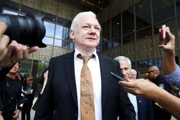

Julian Assange:
Julian Assange:
Jaffna Monitor hellojaffnamonitor@gmail.com 44 Julian Assange: WikiLeaks Founder and Maverick Who Revolutionized Investigative Journalism - Free After 12 Years By: Our International Correspondent W ikiLeaks founder Julian Assange has finally returned to his homeland, Australia, after a U.S. judge approved an unexpected plea deal. "Julian Assange is free," WikiLeaks announced in a statement on X. "He left Belmarsh maximum security prison [in the U.K.] on the morning of June 24, after having spent 1901 days there." The co-founder of the whistleblowing website has agreed to plead guilty to one count World

Jaffna Monitor hellojaffnamonitor@gmail.com 45 of conspiracy to obtain and disclose classified U.S. national defense documents, thus concluding his prolonged legal struggle against extradition to the United States. This marks the first time in 12 years that Assange is free. The decision, announced early Wednesday morning, has led to celebrations among his supporters worldwide. Homecoming in Canberra Assange landed at Canberra Airport in the Australian capital, where he was greeted by a cheering crowd of supporters. As he disembarked the aircraft, he waved to the crowd and shared an emotional reunion with his wife, Stella. The couple embraced on the tarmac, visibly moved by the moment. "Julian wanted me to sincerely thank everyone," Stella said at a press conference. "He wanted to be here. But you have to understand what he's been through. He needs time, he needs to recuperate, and this is a process." With tears in her eyes, she requested privacy for their family as they adjust to their new life together. The Plea Deal and Legal Proceedings After formalizing his plea deal earlier that day, Assange walked out of a courtroom in Saipan, Northern Mariana Islands, a remote U.S. Pacific territory. He pleaded guilty to one count of conspiracy to unlawfully obtain and disclose classified information. "I am, in fact, guilty of the charge," Assange told the court. Assange's U.S. lawyer, Barry Pollack, highlighted the unprecedented nature of the case under the Espionage Act, emphasizing that Assange had revealed truthful, newsworthy information. "The prosecution of Julian Assange is unprecedented in the 100 years of the Espionage Act," Pollack said. "Mr. Assange revealed truthful, newsworthy information ... We firmly believe that Mr. Assange never should have been charged under the Espionage Act." A Decade-Long Pursuit Assange's release from London's high-security Belmarsh prison on Monday was pivotal in a legal saga that spanned over a decade. His arrest in 2019 came after Ecuador withdrew his asylum, ending his seven-year stay at the Ecuadorian Embassy in London. Since then, he has faced numerous legal challenges, including an extradition order signed by the U.K. Home Secretary in 2022, which he successfully appealed on mental health grounds. In a surprising move, Assange was flown to the Northern Mariana Islands for the court proceedings, avoiding the continental U.S. due to his deep mistrust of the country. This location was chosen for its logistical convenience, being closer to Australia. The Evolution of WikiLeaks: From Inception to Global Impact WikiLeaks was established in 2006 by Julian Assange, who registered the domain name and set the foundation for what would become a groundbreaking platform. Initially designed as a disclosure portal modeled after Wikipedia, WikiLeaks allowed anonymous submissions that were edited by volunteers. However, it quickly evolved into a repository for anonymously sourced material, where news and classified information could be uploaded using the anonymity software Tor. This software ensured the uploader's identity remained protected from network surveillance, including WikiLeaks.
Jaffna Monitor hellojaffnamonitor@gmail.com 46 One of WikiLeaks' earliest and most significant revelations concerned the U.S. government's practices at the Guantanamo Bay detention camp, which violated Geneva Convention protocols. It was the period when the site's anonymized submission system was fully operational that saw some of the most consequential leaks. Among these were millions of classified files from the U.S. Department of Defense concerning the Iraq and Afghanistan wars, as well as numerous State Department communiques. These documents were released by former U.S. soldier Chelsea (then Bradley) Manning. A pivotal moment came on April 5, 2010, when WikiLeaks released a 39-minute video showing gun-sight footage from two U.S. AH- 64 Apache helicopters during a 2007 incident in Iraq. The video depicted the helicopter crew firing indiscriminately, killing civilians and two Reuters war correspondents. Reuters had unsuccessfully sought access to this video for nearly three years through the U.S. Freedom of Information Act. Impact and Legacy The release of the war logs, published by a consortium of media organizations, exposed human rights abuses by occupation forces and highlighted the increased fatality counts in Iraq. These leaks provided significant public insight into the operations, lifestyles, and attitudes of elites in various countries, dramatically influencing global perceptions and discussions. WikiLeaks' innovative use of cryptographic tools to safeguard sources and enable anonymous leaks of sensitive information has revolutionized investigative journalism. By exposing the inner workings of governments and power structures, WikiLeaks has significantly impacted the field of journalism, advancing the global pursuit of transparency and accountability. Returning Home Australian officials, including Ambassador to Washington Kevin Rudd and Prime Minister Anthony Albanese, played crucial roles in negotiating Assange's return. Upon his arrival, Albanese expressed his satisfaction with the outcome, highlighting the diplomatic efforts involved. Assange's homecoming, however, comes with a significant financial burden. He owes $520,000 for the charter flight back to Australia. To cover these expenses and support his recovery, an international campaign has been launched, appealing for donations from his supporters. Future Prospects As Julian Assange begins his new life in Australia, the impact of his work with WikiLeaks continues to resonate globally. His case has set a precedent for the protection of journalistic freedom and the role of the media in holding power to account. While WikiLeaks is now a shadow of its former self, its legacy of transparency and whistleblowing remains influential.
